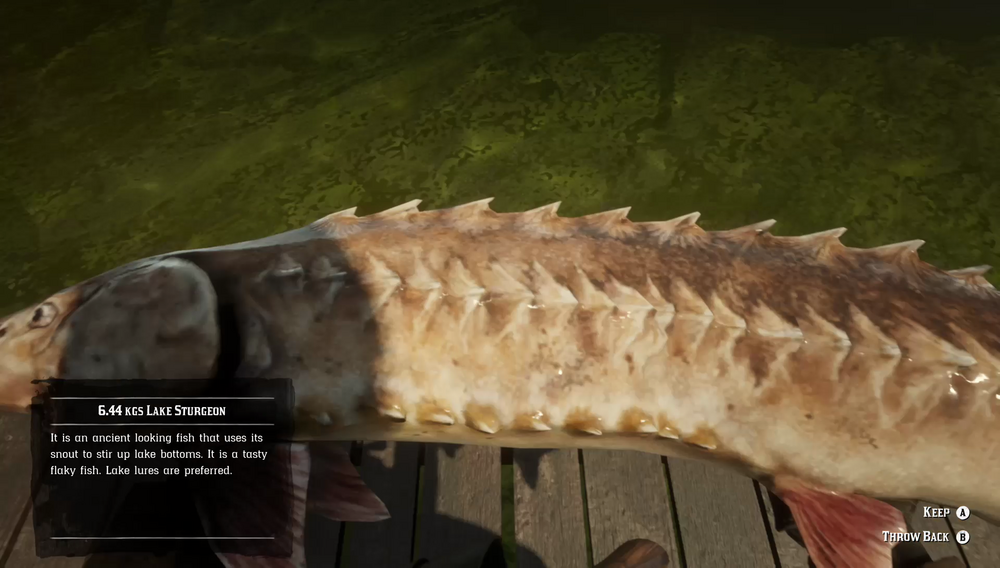

Lake Sturgeon are large, strong, bottom-feeding fish that dwell in the deeper waters of some Southern lakes and swamps. They can be tempted to bite by man-made Lake Lures. Lake Sturgeon are known to be more active during overcast weather. A huge Legendary Lake Sturgeon is rumored to have been spotted around the Lannahechee River delta.
Lake Sturgeon can be found in the deeper waters of some Southern lakes and swamps: Lagras swamps including the Kamassa River to the south and west, coastline east of Bluewater Marsh, coastline of Gill Landing including the islands nearby and south western part of Flat Iron Lake.
